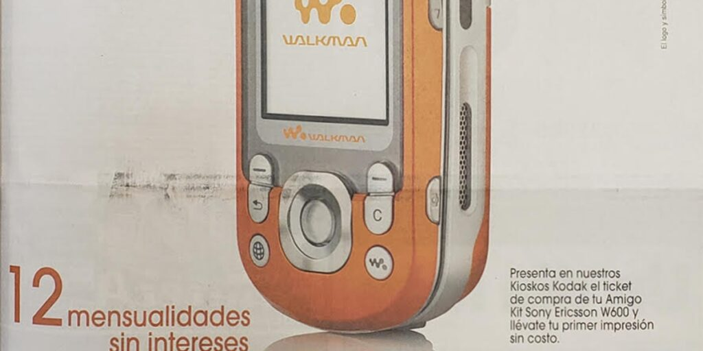
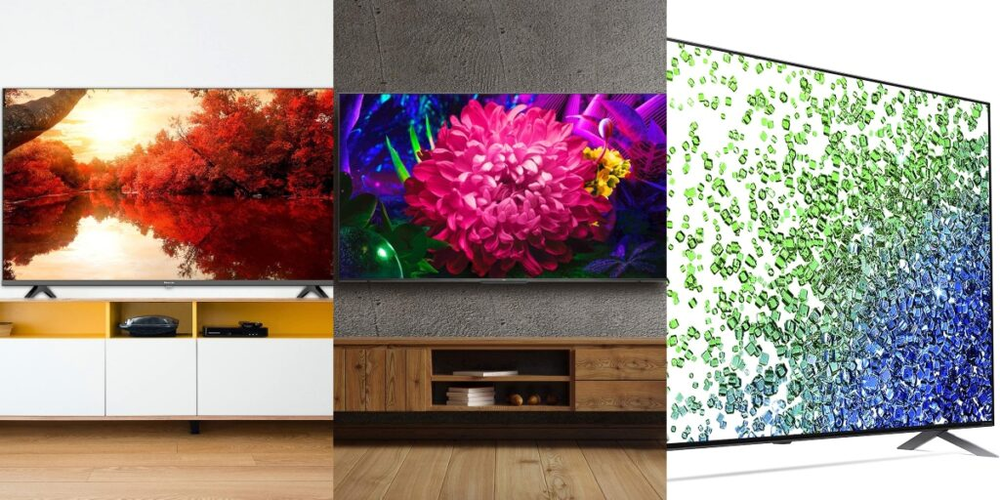
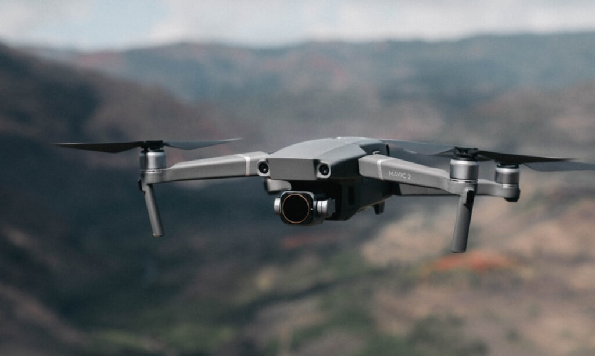
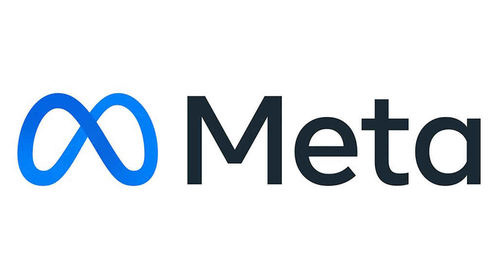
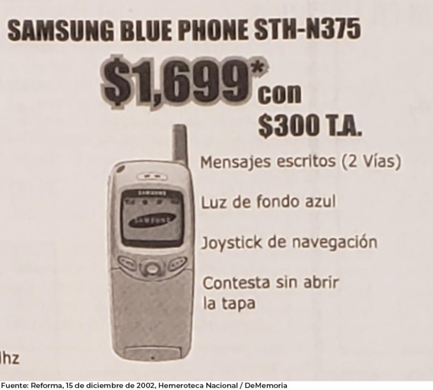
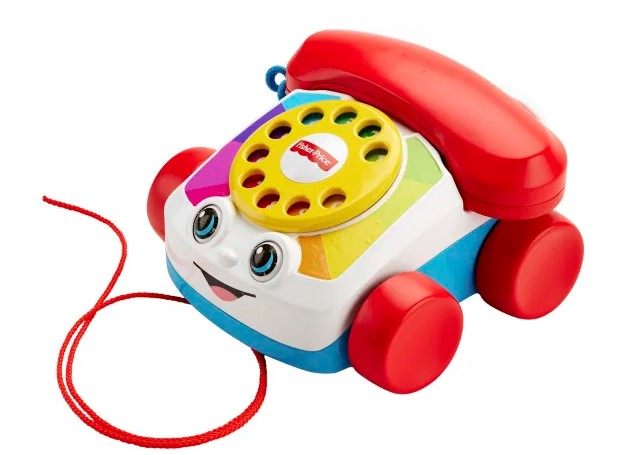

Ultimas noticias sobre Gadgets
Fecha: 29 nov
Categoria: Gadgets

Como puedes verlo, es una imagen promocional de Sanborns que salió publicada en el periódico Reforma
el 17 de noviembre de 2005 y que versó en un Plan Amigo Kit de Telcel que incluía el Sony Ericsson
Walkman W600.
La imagen en realidad no enfatiza las funciones del equipo (solo emplea el eslogan ‘Siempre
conectado a tu Música’) y se limita a promocionar el plan y el teléfono, y a invitar al público a
presentar su ticket de compra para llevarse una impresión sin costo en los Kioskos Kodak.
Fecha: 28 nov
Categoria: Gadgets

Pantalla LED con tecnología NanoCell para que los colores puros se mantengan puros, sin que importe
el ángulo desde donde se le vea . Tiene 42% de descuento.
Precio regular: 46,999 MXN
Precio Buen Fin 2021: 27,199 MXN
Cuenta con tecnología Quantum Dot para más de mil millones de colores puros, así como con Dolby
Atmos / Vision y Chromecast integrado. Tiene 57% de descuento.
Precio regular: 29,999 MXN
Precio Buen Fin 2021: 12,999 MXN
Fecha: 20 nov
Categoria: Gadgets

El esperado lanzamiento del DJI Mavic 3 y Mavic 3 cine está sucediendo finalmente. Los drones
cuentan con baterías clasificadas para 46 minutos de vuelo, una mejora significativa con respecto a
las baterías anteriores.
Ambos drones son sucesores de Mavic 2 Pro y Mavic 2 Zoom, lanzados por DJI en 2018, estas versiones
anteriores introdujeron la primera cámara Hasselblad, la cual regresó en las nuevas versiones que
incluyen Hasselblad Natural Color Solution.
Fecha: 29 nov
Categoria: Gadgets

Llevamos algunos meses escuchando rumores sobre el smartwatch de Facebook, que sería el primer
hardware de la compañía enfocado en este mercado, pues actualmente la única empresa que además de
software también crea hardware dentro de Facebook es Oculus.
El día de ayer Facebook anunció sus ambiciosos planes para el metaverso, por esa razón la compañía
dejó de llamarse Facebook para cambiar por “Meta”, aunque Facebook seguirá existiendo como red
social, pero no será la matriz de las compañías de Zuckerberg.
Lo anterior es importante porque este smartwatch sería el primer producto de hardware enfocado en el
metaverso después de la creación de Meta.
Fecha: 28 oct
Categoria: Gadgets

Como puedes ver, es un anuncio que fue publicado en el periódico Reforma el 15 de diciembre de 2002
y que se centra en el Samsung STH-N375, un equipo que al momento de la publicación no era novedoso,
sin que ello demerite que presumía características que hicieron diferencia con respecto a los
equipos contra los que le tocó competir.
La publicidad resalta los mensajes escritos en dos vías (para no confundir con la tecnología de los
pagers, receptores de textos cuyo envío debía triangularse con una operadora), la luz de fondo azul
y el joystick de navegación, funciones que, por ejemplo, estaban en algunos equipos Ericsson; sin
embargo, la característica que destaca es la capacidad de contestar sin abrir la tapa, un primer
avistamiento a la lógica de sintetizar procesos que habría de llegar después en la industria del
teléfono celular.
Fecha: 23 oct
Categoria: Gadgets

Sin lugar a dudas existen juguetes y juegos que con simplemente verlos pueden remontarnos a la
infancia y quizás el Chatter Telephone de Fisher-Price es uno de ellos.
Hablamos de ese teléfono que con ojos juguetones se ha mantenido en el mercado por varias décadas y
que ahora recibe una actualización para cautivar no precisamente a los más pequeños del hogar.
En una suerte por capitalizar la euforia alrededor de la moda vintage y la nostalgia, pero con un
toque de nueva generación, la reconocida marca de juguetes ha lanzado una nueva versión de su
Chatter Telephone que seguro querrás tener.
En el marco de la celebración de los 60 años del lanzamiento de este icónico juguete, se ha lanzado
Chatter Telephone 2.0 mismo que conservado los detalles visuales y estéticos, ahora se ha equipado,
entre otras cosas, con una conexión Bluetooth y baterías recargables para convertirse en un
accesorio para el smartphone.